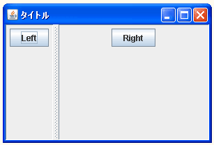
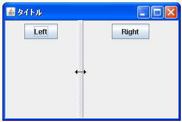
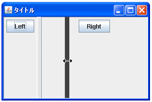
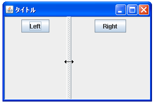

- Home ›
- Swing ›
- JSplitPaneクラス
仕切線(ディバイダ)移動時の再描画方式を設定する
仕切線がユーザーによって移動させられた時、リアルタイムで再描画を行うのか、それとも仕切線の移動が終わってから再描画を行うのかを指定します。
再描画の方式を設定するにはコンストラクタで指定する方法とメソッドで指定する方法があります。まずはコンストラクタで指定する方法を確認します。
JSplitPane
public JSplitPane(int newOrientation,
boolean newContinuousLayout)
方向と再描画のスタイルを指定して新しい JSplitPane を作成します。
パラメータ:
newOrientation - JSplitPane.HORIZONTAL_SPLIT または
JSplitPane.VERTICAL_SPLIT
newContinuousLayout - boolean 値。ディバイダの位置の変更に合わせてコ
ンポーネントが連続して再描画されるようにする場合は true、 ディバイ
ダの位置の変更が終了するまで再描画を待機する場合は false
例外:
IllegalArgumentException - orientation が HORIZONTAL_SPLIT または
VERTICAL_SPLIT のどちらかでない場合
1番目の引数には引数に分割する方向を表すint型の値を指定します。JSplitPane.HORIZONTAL_SPLIT又はJSplitPane.VERTICAL_SPLITのいずれかを指定します。詳しくは『分割方向を設定する』を参照して下さい。
2番目の引数に再描画の方式を表すboolean型の値を指定します。連続して再描画を行う場合には「true」、仕切線の移動が終わった後に再描画を行う場合には「false」を指定します。
実際の使い方は次のようになります。
JSplitPane splitpane = new JSplitPane(JSplitPane.HORIZONTAL_SPLIT, true);
また領域に配置するコンポーネントを同時に指定するコンストラクタも用意されています。
JSplitPane
public JSplitPane(int newOrientation,
boolean newContinuousLayout,
Component newLeftComponent,
Component newRightComponent)
方向、再描画スタイル、コンポーネントを指定して新しい JSplitPane を作成
します。
パラメータ:
newOrientation - JSplitPane.HORIZONTAL_SPLIT または
JSplitPane.VERTICAL_SPLIT
newContinuousLayout - boolean 値。ディバイダの位置の変更に合わせてコ
ンポーネントが連続して再描画されるようにする場合は true、 ディバイ
ダの位置の変更が終了するまで再描画を待機する場合は false
newLeftComponent - 水平方向に分割された区画の左、または垂直方向に分割
された区画の上に表示される Component
newRightComponent - 水平方向に分割された区画の右、または垂直方向に分
割された区画の下に表示される Component
例外:
IllegalArgumentException - orientation が HORIZONTAL_SPLIT または
VERTICAL_SPLIT のどちらかでない場合
1番目と2番目の引数は先ほどのコンストラクタと同じです。3番目と4番目の引数に左側及び右側の領域に配置するコンポーネントを指定します。詳しくは『領域にコンポーネントを配置する』を参照して下さい。
実際の使い方は次のようになります。
JSplitPane splitpane =
new JSplitPane(JSplitPane.HORIZONTAL_SPLIT, true,
new JButton("left"), new JButton("right"));
メソッドで指定する
一度作成されたスプリットペインにメソッドを使って再描画の方式を設定する方法を確認します。JSplitPaneクラスで用意されている「setContinuousLayout」メソッドを使います。
setContinuousLayout public void setContinuousLayout(boolean newContinuousLayout)
continuousLayout プロパティーの値を設定します。 この値はユーザーが操作
したときに子コンポーネントが連続的に再描画されて配置されるように true
に設定する必要があります。このプロパティーのデフォルトの値は false で
す。一部の Look & Feel は連続したレイアウトをサポートしていません。 そ
の場合、このプロパティーは無視されます。
パラメータ:
newContinuousLayout - ディバイダの位置が変更されたときにコンポーネント
が連続的に再描画される場合は true
引数に再描画の方式を表すboolean型の値を指定します。連続して再描画を行う場合には「true」、仕切線の移動が終わった後に再描画を行う場合には「false」を指定します。
実際の使い方は次のようになります。
JSplitPane splitpane = new JSplitPane(); splitpane.setContinuousLayout(true);
サンプルプログラム
では簡単なサンプルを作成して試してみます。
import javax.swing.*;
import java.awt.BorderLayout;
public class JSplitPaneTest11 extends JFrame{
public static void main(String[] args){
JSplitPaneTest11 frame = new JSplitPaneTest11();
frame.setDefaultCloseOperation(JFrame.EXIT_ON_CLOSE);
frame.setBounds(10, 10, 300, 200);
frame.setTitle("タイトル");
frame.setVisible(true);
}
JSplitPaneTest11(){
JSplitPane splitpane = new JSplitPane();
splitpane.setContinuousLayout(true);
JPanel leftPanel = new JPanel();
JButton leftButton = new JButton("Left");
leftPanel.add(leftButton);
JPanel rightPanel = new JPanel();
JButton rightButton = new JButton("Right");
rightPanel.add(rightButton);
splitpane.setLeftComponent(leftPanel);
splitpane.setRightComponent(rightPanel);
getContentPane().add(splitpane, BorderLayout.CENTER);
}
}
上記をコンパイルした後で実行すると次のように表示されます。

今回は連続再描画に設定してありますので、仕切線を移動するとリアルタイムで左右の領域が再描画されます。

ちなみに連続再描画では無い場合には、次のように仕切線が移動中は左右の領域の再描画は行われずに仕切線の移動が終わった時に再描画が行われます。


( Written by Tatsuo Ikura )

著者 / TATSUO IKURA
初心者～中級者の方を対象としたプログラミング方法や開発環境の構築の解説を行うサイトの運営を行っています。